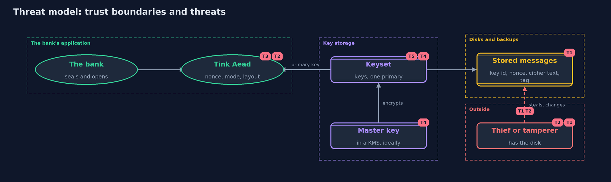

Threat Model — Symmetric Encryption with Google Tink
A threat model answers four questions: what are we protecting, who or what could harm it, how, and what do we do about it. This one covers this project's own demo system, not a production deployment. Domain: an online bank.
Scope
An online bank's use of Google's Tink to encrypt statement lines: the Aead primitive, the keyset with its primary key, key rotation, and the keyset stored under a master key. It covers a thief who reads a disk, one who changes a message, and the loss or exposure of keys. It does not cover who may ask for a statement, or the key management service that should hold the master key.
What we protect (assets)
- The contents and integrity of each statement line.
- The keyset: every key that can open stored messages.
- The master key that protects the keyset on disk.
- The record of which key id made which message.
Who and what acts on the system
- The bank's services, which seal and open messages.
- A thief who copies disks, backups or the stored keyset.
- An attacker who changes or moves stored messages.
- An operator who rotates keys, and may remove one too early.
Trust boundaries
A trust boundary is a line that data or a request crosses between parts that trust each other differently. Threats cluster where those lines are.
- Application to disk: messages leave as key id, nonce, cipher text and tag.
- Application to key storage: the keyset reaches memory only after the master key opens it.
- Master key to key management service: the line that should hold the master key.

Each dashed box is a trust boundary. A rose tag such as T1 shows where the threat of that number, in the table below, applies.
Threats, using STRIDE
STRIDE is a checklist of six kinds of threat: Spoofing (S), Tampering (T), Repudiation (R), Information disclosure (I), Denial of service (D), Elevation of privilege (E).
| Id | Kind | Threat | Where it shows up | Control in this project | What is left |
|---|---|---|---|---|---|
| T1 | Information disclosure | A thief reads statements from a disk or a backup | stored messages | Tink's AES-GCM hides the contents; the keyset is kept apart from the messages | Message lengths show, and a thief who also gets the keyset reads everything |
| T2 | Tampering | Someone changes a message, or moves it to another account | Bank.openOrNull |
The tag covers the cipher text and the associated data, so a change or a move is refused | A valid old message can be put back for the same account |
| T3 | Information disclosure | A developer picks a weak mode or reuses a nonce | the Aead API |
Tink has no place to put a nonce and offers no ECB template | A developer can still choose a weak primitive elsewhere, or build a key from a weak password |
| T4 | Information disclosure | The keyset is read from disk or from a backup | the stored keyset | It is written encrypted under a master key | The master key now needs a safe home; Tink's own encrypted-keyset functions are deprecated in favour of a key management service |
| T5 | Denial of service | A key is removed too early, and old messages can no longer be opened | keyset rotation | Add the new key first, make it primary, re-encrypt, and only then remove the old key | A mistake in the order loses data, so the steps need a runbook and a backup |
| T6 | Repudiation | A message cannot be traced to the key that made it | the five-byte start of each message | The key id at the start of every message names the key | It names the key, not the person or service that used it |
Assumptions
- The attacker does not have the keyset or the master key.
- Tink and its dependency are kept up to date.
- In the demo, keysets are built from fixed public bytes, and the master key is another demo keyset. Real keysets come from
generateNew.
Out of scope
- Hardware security modules and cloud key management services.
- Who is allowed to ask for a decrypted statement.
- Other Tink primitives: signatures, MACs and hybrid encryption.
How the tests check this
TinkAeadTestchecks nonce freshness, the five-byte start, the 33-byte overhead, and refusal for changed, moved and wrongly keyed messages.KeysetTestchecks rotation, removal of an old key, the encrypted keyset file and the missing ECB template.DemoRunsTestcompares the whole demo with the golden output.
Where this model goes next
The next project, asymmetric-encryption, tackles what both versions leave open: how two parties who have never met agree on a key at all.